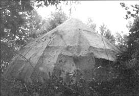
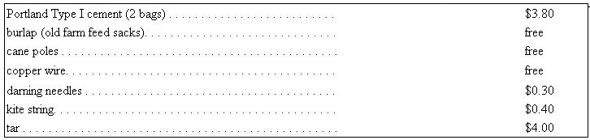

While in Arkansas this past summer, we constructed a sturdy and waterproof shelter for a truly small cash outlay. Our building is a United Nations-type structure built of burlap, poles and cement. The materials and cost are as follows:
The cement we used is the ordinary Portland variety that comes in 94 lb. paper bags. We found the burlap at town dumps or acquired it from rural neighbors who always seem to have an abundance of extra feed sacks on hand. The cane poles were scrounged from down by the river. They resemble bamboo, grow in clumps and often reach over 14 feet in height. Store-bought bamboo or any other flexible poles could be substituted for the cane we used . . . but ours were native to the region and the price was definitely right.
Old refrigerators and electric motors from local dumps supplied the copper wire for our shelter and we bought the kite string and darning needles at a dime store.
The first part of the building to be constructed, naturally. was the foundation. We built ours by digging 16 holes in the ground in a circle which formed the perimeter of the shelter. We then rammed one of the longest cane poles into each hole and firmly tamped the cavities full of 6-3-1 (gravel, sand, cement) around the slender uprights. If you try the idea, don't let your cement get too wet and remember to really tamp it firmly. Then, as we did, cover each chunk of fresh concrete with wet burlap and let it "set up" for 24 hours.
The day after we poured the cement, we bent the cane poles over and tied them together in the center with copper wire. This formed the framework into a cone shape and we "broke up" the really wide spaces by wiring on shorter horizontal poles. We also framed in door, window and chimney openings at this time.
Once the skeleton was completed, we cut open all the strong burlap bags and-with the darning needles, kite string and copper wire-stitched the coarse fabric onto the frame.
This process is easy to describe but hard to do properly. It simply must be done right, however, so take your time, soak the rough cloth in water and stretch it over the framework as tightly as possible. Wire on more horizontal poles at strategic points if you think it'll help. You can also tie the corners of the burlap to the frame with wire and then stretch the middle of the fabric out over the bowed cane.
Save all the burlap sacks which were too weak or rotten to sew into the membrane. You'll find they come in quite handy a little later.
When you have the frame covered with burlap, you're ready to coat the fabric with a slurry of three parts sand and one part cement mixed up into a sloppy mud. Wet the tight, coarse cloth and try to work the thin cement completely into the fibers of the fabric . . . rather than letting it form just a surface covering over the burlap. Slop the cement on and muscle it into the burlap from both the in and outside. You want to work the mixture all the way through and around every filament of the fabric.
When the burlap is completely covered, take the rotten and torn bags which were laid aside earlier and soak them in water. Wring the sacks out sopping damp and spread them over the fresh cement so it will cure more slowly and evenly with a minimum of cracks. If it's a super-hot day in summer or your shelter is exposed to the broiling sun, you may have to splash more water over the old bags as they dry out. On the other hand, you'll probably find that the covering can be wrung almost completely dry before application and never redampened if your cement is curing in cool, humid spring or fall weather. The idea is to help the thin shell of concrete cure without cracking. A few cracks are bound to appear, of course, and shouldn't unduly worry you . . . but keep them as few and far between as possible.
If you attempt to spread a second coat of cement over the first or do any other touch-up work after the original concrete has begun to dry, remember to dampen the shell . . . otherwise the new slurry will not adhere to the old.
Since cement is porous, the shell of your structure-no matter how sound-will not be completely waterproof. An inexpensive coating of tar will remedy that. Puddle it on and coat it with aluminum paint to reflect the sun.
The final result of these efforts should be a sturdy, waterproof structure at absolutely minimum cost. Ours, at least, remains intact after weathering some truly violent storms and now continues to serve nobly as a chicken coop and cement storage bin.
Naturally, by the time we completed our shelter, we had figured out some better ways to design and erect such a building.
A quonset shape would probably offer several advantages over the igloo-dome-yurt design we used. The less-complex curves of the quonset would have made the stretching of the burlap and placement of doors and windows much easier. We're also wondering how a different waterproofing agent would work. An epoxy or fiberglas covering would probably be excellent. Improvise.
|
 |
 |
|